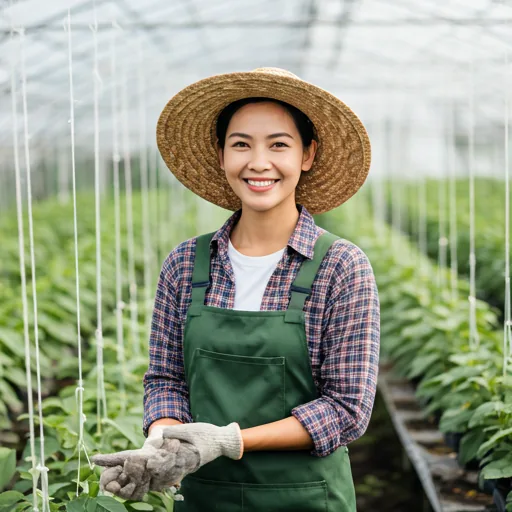
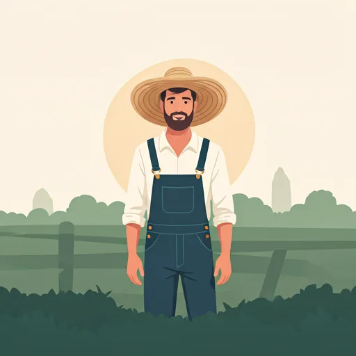
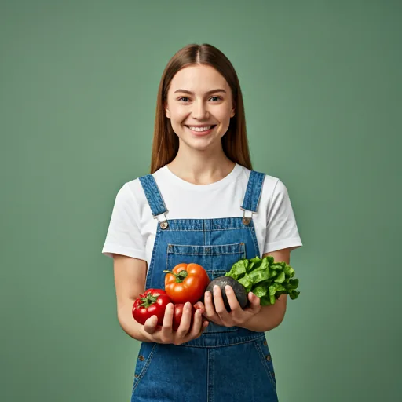

Head horticulturist
Elena Rostova
With 15 years in organic cultivation, Elena helps every plant reach its potential through natural methods.
Verde began with a simple question: what if better groceries also built a better local food system? Today, we connect thoughtful growers with households that care about flavor, fairness, and the land beneath every harvest.
Our mission
Bridge the distance between conscientious farmers and mindful eaters—so every box celebrates the true flavor of the earth.
A shorter supply chain means produce can be harvested closer to ripeness, growers can be paid more fairly, and every handoff can be handled with intention.
Heritage seeds are selected for flavor and resilience, then planted in nutrient-rich organic soil.
Sun, responsible watering, and patient crop care help plants thrive without harmful pesticides.
Skilled hands pick each crop at the moment its flavor, texture, and nutrition are at their best.
Low-waste packing and thoughtful neighborhood routes bring the farm directly to your kitchen.
Soil knowledge, careful timing, and years of craft shape every ingredient before it reaches a Verde box.

With 15 years in organic cultivation, Elena helps every plant reach its potential through natural methods.

Marcus believes great food begins beneath the surface and leads Verde's composting and soil regeneration work.

Sarah teaches harvest teams to read each crop and pick at the precise moment for the best possible taste.
See how compostable packing, regenerative partners, and smarter routes turn that belief into everyday practice.